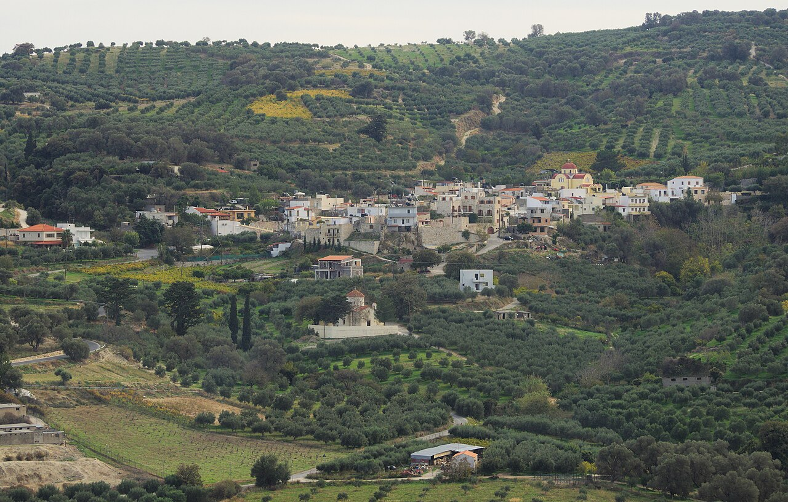
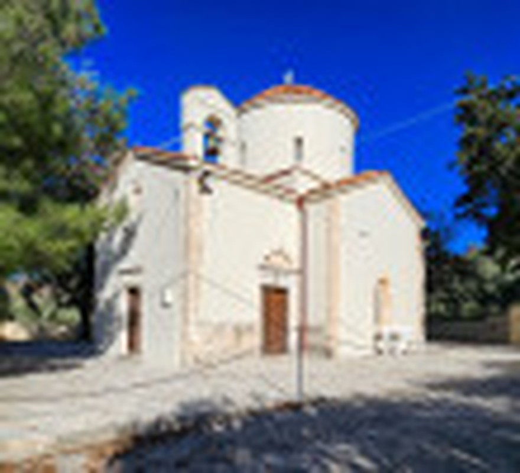
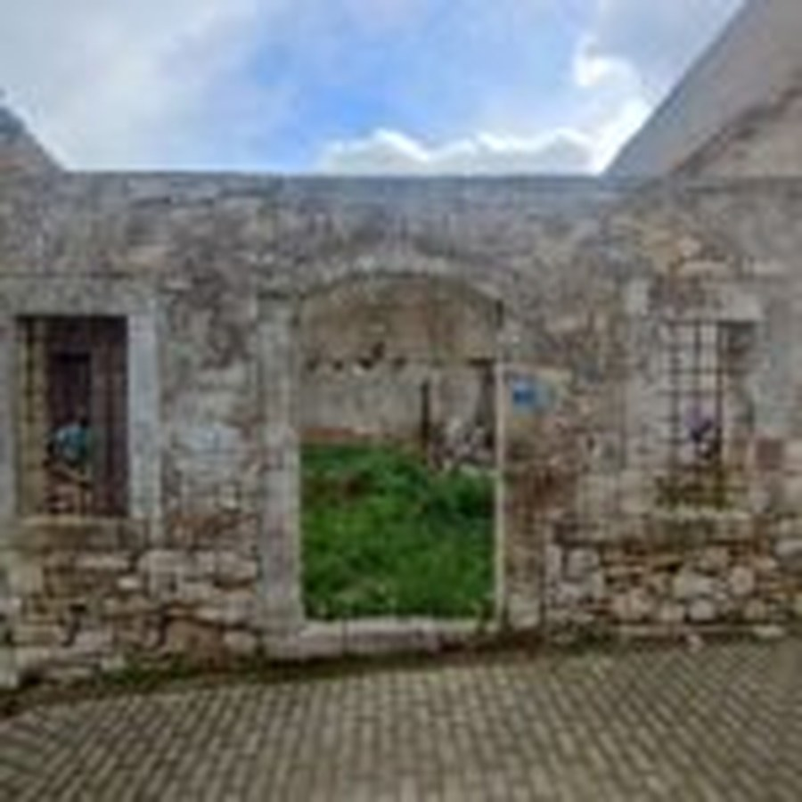
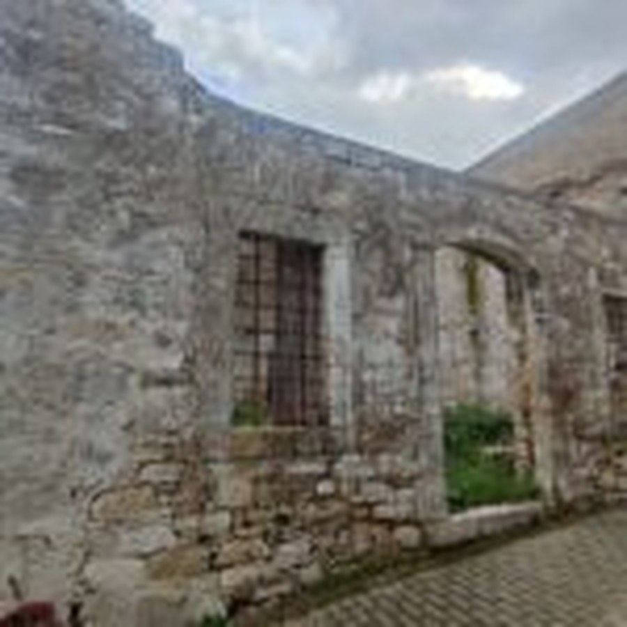
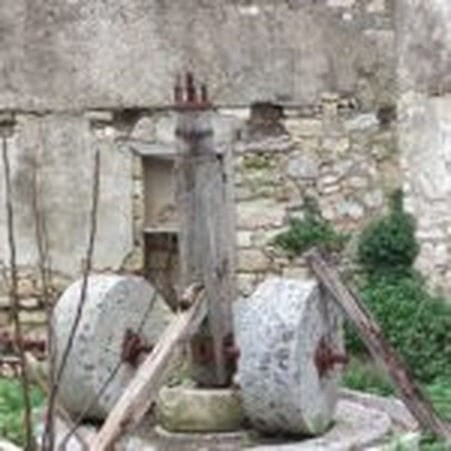
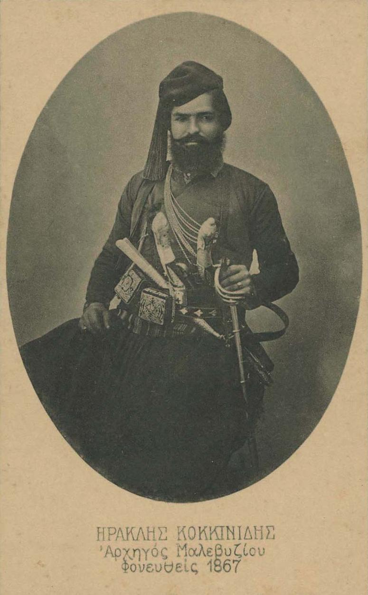

Ένα χωριό που κρατά την Κρήτη ζωντανή
Κεραμούτσι.
Μικρό στον χάρτη,
μεγάλο σε ιστορία.
Αμπέλια, ελαιώνες, βυζαντινοί ναοί, ένα ιστορικό φρούριο και η μνήμη ανθρώπων που αγωνίστηκαν για την ελευθερία.
Φωτογραφία: C messier / Wikimedia Commons, CC BY-SA 4.0
Γνώρισε το χωριό
Η ήρεμη πλευρά του Μαλεβιζίου
Χτισμένο μέσα σε μια καταπράσινη ζώνη από αμπέλια και ελαιώνες, το Κεραμούτσι προσφέρει στον επισκέπτη κάτι σπάνιο: ιστορία χωρίς συνωστισμό και παράδοση χωρίς σκηνοθεσία.
Περπάτησε στην πλατεία, αναζήτησε τις παλιές εκκλησίες, γνώρισε τη Φάμπρικα Κοκκινίδη και συνέχισε προς τη Φλέγα ή το Καστέλι Μαλεβιζίου. Το χωριό είναι ιδανικό για μια ήρεμη ημερήσια απόδραση από το Ηράκλειο.

Μνημείο
Ναός της Παναγίας
Σώζει λαϊκές τοιχογραφίες του 14ου αιώνα και τη μεταγενέστερη σταυροειδή μορφή με τρούλο.
Ιστορία
Castel Malvicino
Τα ερείπια του στρατηγικού φρουρίου που έδωσε το όνομά του σε ολόκληρη την επαρχία Μαλεβιζίου.
Μάθε περισσότερα


Φάμπρικα Κοκκινίδη
Προβιομηχανικό ελαιοτριβείο με σωζόμενο εξοπλισμό, συνδεδεμένο με την οικογένεια του Ηρακλή Κοκκινίδη.
Φύση
Η θέση Φλέγα
Πλάτωμα δίπλα στο ποτάμι, διαμορφωμένο για ξεκούραση, μικρές παρέες και ήρεμες στιγμές στη φύση.
Ναός
Άγιος Αντώνιος
Ιστορικός ναός στην άκρη του χωριού, γνωστός για τις παλιές τοιχογραφίες και τα εμφανή ίχνη της οθωμανικής περιόδου.
Εμπειρία
Ρακοκάζανα & γλέντια
Η απόσταξη της τσικουδιάς γίνεται αφορμή για παρέες, μουσική και τοπικές γεύσεις, κυρίως το φθινόπωρο.
Χρόνος και μνήμη
Ιστορία πολλών αιώνων
Το Κεραμούτσι βρίσκεται σε μια περιοχή που συνέδεσε την αγροτική ζωή, τη στρατηγική άμυνα και τους αγώνες της Κρήτης.
Το φρούριο Malvicino
Η επικρατέστερη εκδοχή συνδέει την κατασκευή του με τη σύντομη Γενουατική κατοχή της Κρήτης και τον Enrico Pescatore. Η θέση του επέτρεπε τον έλεγχο της ενδοχώρας.
Σεισμός και επανάσταση
Το φρούριο αναφέρεται ότι καταστράφηκε στον μεγάλο σεισμό του 1303, ανοικοδομήθηκε και βρέθηκε ξανά στο επίκεντρο της επανάστασης των Καλλεργών.
Chieramuzzi
Ο Καστροφύλακας καταγράφει τον οικισμό με το όνομα Chieramuzzi και 192 κατοίκους. Το 1671 εμφανίζεται ως Keramuci.
Η εποχή του Ηρακλή Κοκκινίδη
Ο νεαρός οπλαρχηγός συνδέθηκε με το Κεραμούτσι και πρωταγωνίστησε στους απελευθερωτικούς αγώνες, ως αρχηγός Μαλεβιζίου–Τεμένους στην Επανάσταση του 1866.
Ζωντανό χωριό, ζωντανή παράδοση
Η κοινότητα συνεχίζει να οργανώνει γιορτές, πολιτιστικές δράσεις και εκδηλώσεις μνήμης, κρατώντας ενεργή τη σχέση των νεότερων γενεών με τον τόπο.
Οι άνθρωποι της ιστορίας
Πρόσωπα που άφησαν αποτύπωμα

Public domain · Wikimedia Commons1842–1868
Ηρακλής Κοκκινίδης
Οπλαρχηγός Μαλεβιζίου και μία από τις νεότερες, πιο έντονες μορφές της Κρητικής Επανάστασης του 1866.
Έζησε και ανέπτυξε τη δράση του στο Κεραμούτσι, αφιερώνοντας μεγάλο μέρος της περιουσίας του στον αγώνα. Έπεσε το 1868 στη Γαζανή Καμάρα, σε ηλικία 26 ετών. Η προτομή του βρίσκεται στην πλατεία του χωριού.
Αρχηγός Μαλεβιζίου–Τεμένους
Επανάσταση του 1866
Μνημείο στην πλατεία
ΜΚ
Μιχαήλ Καλημεράκης
Γαμπρός του Ηρακλή Κοκκινίδη και διάδοχός του στην αρχηγία μετά τον θάνατό του. Συνέχισε τον αγώνα μαζί με τους άνδρες του.
ΝΚ
Νικόλαος Κοκκινίδης
Πατέρας του Ηρακλή. Η οικογένεια Κοκκινίδη συμμετείχε ενεργά στη Μεγάλη Κρητική Επανάσταση και διέθεσε πόρους για τον αγώνα.
ΕΚ
Εμμανουήλ Κοκκινίδης
Αδελφός του Ηρακλή και μέλος της οικογένειας που συνδέθηκε συλλογικά με την επαναστατική δράση στο Μαλεβίζι.
Ζωντανή παράδοση
Γιορτές, γεύσεις και παρέες
Η εμπειρία του Κεραμουτσίου δεν περιορίζεται στα μνημεία. Το χωριό ζει μέσα από τα πανηγύρια, τα καζανέματα και τις εκδηλώσεις που οργανώνουν οι κάτοικοι και ο πολιτιστικός σύλλογος.
ΚλήδοναςΓιορτή του Αγίου Ιωάννη με φωτιές και έθιμα.
Πανηγύρι της ΠαναγίαςΘρησκευτικός εορτασμός και αντάμωμα του χωριού.
Γιορτές και πολιτιστικές δράσειςΜουσική, τοπικά προϊόντα και δραστηριότητες για όλες τις ηλικίες.
«Το Κεραμούτσι δεν είναι αξιοθέατο που απλώς βλέπεις. Είναι τόπος που καταλαβαίνεις περπατώντας αργά.»Η εμπειρία του επισκέπτη
Εικόνες του τόπου
Μια πρώτη ματιά στο Κεραμούτσι
Επίλεξε μια εικόνα για προβολή σε πλήρες μέγεθος.
Σχεδίασε την επίσκεψή σου
Ένα χωριό κοντά στην πόλη, μακριά από τη βιασύνη
Πρόσβαση
Περίπου 15 χλμ. από το Ηράκλειο, στον δρόμο προς Κρουσώνα, και 3,5 χλμ. νότια της Τυλίσου. Το αυτοκίνητο είναι η πρακτικότερη επιλογή.
Χρόνος επίσκεψης
Υπολόγισε 2–4 ώρες για το χωριό και περισσότερο αν συνδυάσεις τη διαδρομή με Τύλισο ή κοντινά σημεία του Μαλεβιζίου.
Καλύτερη εποχή
Άνοιξη για το πράσινο τοπίο, καλοκαιρινά απογεύματα για εκδηλώσεις και φθινόπωρο για την εποχή της απόσταξης.
Σεβασμός στον τόπο
Οι ναοί και τα ιστορικά κτίρια είναι χώροι μνήμης. Απόφυγε την είσοδο σε κλειστές ή μη ασφαλείς εγκαταστάσεις και μην αφήνεις απορρίμματα.
Πρόταση διαδρομής
Μισή ημέρα στο Κεραμούτσι
- 01Πλατεία και μνημείο
Ξεκίνα από την καρδιά του χωριού και την προτομή του Ηρακλή Κοκκινίδη.
- 02Ιστορικοί ναοί
Περπάτησε προς την Παναγία και τον Άγιο Αντώνιο, παρατηρώντας την παλιά αρχιτεκτονική.
- 03Φάμπρικα Κοκκινίδη
Δες το κτίριο του παλιού ελαιοτριβείου και γνώρισε την παραγωγική ιστορία του τόπου.
- 04Καφές ή φύση
Κλείσε τη βόλτα στην πλατεία ή, όταν οι συνθήκες το επιτρέπουν, στη θέση Φλέγα.
Βοήθησε να γίνει καλύτερος ο οδηγός
Έχεις φωτογραφίες, ιστορίες ή διορθώσεις;
Ο τόπος γίνεται πιο ορατός όταν οι άνθρωποί του μοιράζονται τη μνήμη και τη γνώση τους. Συμπλήρωσε τη φόρμα και θα ανοίξει το πρόγραμμα email σου με έτοιμο μήνυμα προς το Visit Malevizi.